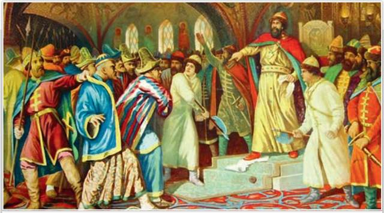
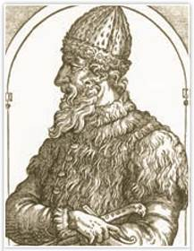
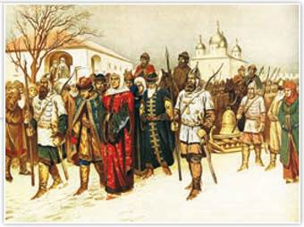
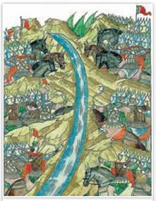
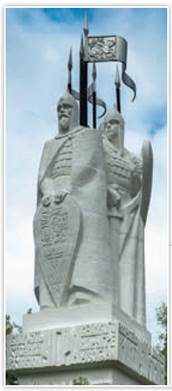
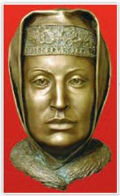
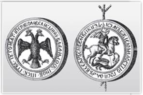
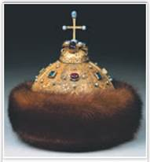
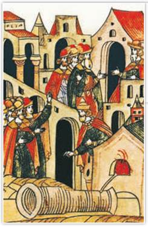

Иван III разрывает ханскую грамоту. Художник А. Кившенко. 1880 г.
Некоторые историки считают сюжет этой картины вымышленным. Они полагают, что хитрый и расчётливый московский князь Иван III действовал более осторожно в отношениях с Ордой.
РОССИЯ
МИР
1. Задачи правления Ивана III. Сын Василия II Иван III (1462—1505) вступил на московский престол в возрасте двадцати двух лет. Ещё при жизни своего отца он стал его официальным соправителем. Заняв престол, Иван Васильевич взял курс на ограничение прав своих братьев — удельных князей.

Великий князь Иван III. Гравюра А. Теве. 1575 г.
Подробнее. Великий князь Иван III отличался незаурядным умом, был осторожен в принятии решений, расчётлив и не пренебрегал советом доверенных бояр. Иностранец, побывавший у него на приёме, писал, что московский князь высок, худощав и «вообще очень красивый человек». Глядя на него, женщины падали в обморок, а мужчины теряли дар речи. Будучи свидетелем событий кровавой московской усобицы, Иван III рано сделал вывод о необходимости сильной великокняжеской власти. Уже в молодости он был способен на жёсткие решения. Только так можно было преодолеть распри князей, объединить княжества в единое государство. Многие историки вслед за Н. Карамзиным называют его Иваном Великим.
Ивану III выпало решить важнейшие исторические задачи: завершить объединение русских земель вокруг Москвы; окончательно избавить Русь от ордынского владычества; приступить к созданию единого Рос
сийского государства, в чём князь и преуспел почти за 43 года своего пребывания на московском престоле. «Изумлённая Европа, в начале правления Ивана едва знавшая о существовании Московии, была ошеломлена внезапным появлением на её восточных границах огромной империи...» — писал в XIX в. немецкий экономист К. Маркс.
2. Присоединение к московским землям Ярославского и Ростовского княжеств. Крушение независимости Новгорода. В 1460-х гг. Иван III легко присоединил к своим владениям Ярославское княжество. Местные князья давно ходили в подручниках московских правителей. В 1474 г. Иван III выкупил уделы у ростовских князей. Устройство Ярославского и Ростовского княжеств имело много общего с общественным и хозяйственным укладом княжества Московского.
Потомков удельных князей Иван III переводил в Москву, и они вливались в московское боярство. Отдавая должное их происхождению, за ними закрепляли княжеский титул. Историки называют бывших удельных князей боярами-княжатами. Чтобы разорвать связь бояр-княжат с родными уделами, Иван III изымал их прародительские земли. Взамен бывшие удельные князья получали иногда даже большие по территории вотчины, но разбросанные по всей Руси. Так княжат «привязывали» к московскому князю и его обширному государству, разрушая память об удельной старине. Иван III отбирал вотчины и у провинциальных бояр. Их тоже переселяли в иные земли государства, наделяли поместьями на условии службы московскому князю. Потомков провинциальных бояр называли детьми боярскими.
Покорить Новгород оказалось гораздо сложнее, ведь хозяйственный, общественный и политический строй Новгородской земли во многом отличался от московского.
Подробнее. В Новгороде большая часть «лучших людей» во главе с вдовой посадника Марфой Борецкой связывала с Москвой угрозу своим вольностям, хозяйству и торговле. Гарантию самостоятельности Новгорода они видели в сближении с Великим княжеством Литовским. В 1471 г., когда сын Марфы Дмитрий стал посадником, Новгород заключил союз с Литвой. Великий князь литовский и король польский Казимир IV обязался помочь новгородцам в случае войны с Москвой. Договор Новгорода с Литвой нарушал условия Яжелбицкого мира 1456 г. Иван III не мог допустить сближения Новгородской республики с Литвой. В середине июля 1471 г. в битве на реке Шелони московское войско разбило новгородские отряды. Казимир IV не пришёл на помощь новгородцам.
Иван III взял с Новгорода контрибуцию — платёж в пользу победителя. Дмитрий Борецкий и его сторонники были казнены. Новгородцы приняли наместника из Москвы и разорвали договор с Литвой. Иван III как верховный судья разбирал судебные тяжбы новгородцев, невзирая на лица. Авторитет великого князя московского среди горожан заметно вырос. Некоторые новгородские бояре думали, что покорностью Москве можно сохранить свои вольности, но они ошиблись.
В 1477 г. Иван III вновь пошёл на Новгород, уже требуя: «Вечу и колоколу в отчине нашей Новгороде не быти. Посаднику не быти. А государство нам своё держати...» В осаждённом городе начался голод, и в январе 1478 г. вече приняло условия Ивана III. Великий князь вступил в Новгород. Он казнил бояр — противников Москвы, забрал их владения. Марфа Борецкая с внуком была сослана в Нижний Новгород и закончила жизнь в монастыре. Иван III пообещал не переселять в иные земли покорных ему бояр. В Москву на сотнях подвод была отправлена взятая с Новгорода контрибуция. Увезли и вечевой колокол. Самобытный торгово-промысловый уклад Новгородчины, основанный на боярских вотчинах, был разрушен.

Отправка Марфы Посадницы и вечевого колокола в Москву. Художник А. Кившенко. 1880 г.
С помощью иллюстрации и текста параграфа составьте рассказ о противостоянии Новгорода и Москвы.
Вскоре перед Иваном III встал вопрос: где брать новые земли для служилых людей, от численности которых зависела военная мощь государства. В 1480—1490-х гг. почти 90% новгородских вотчин было конфисковано. Новгородских бояр и многих «лучших людей» Иван III расселял по всей Руси, давал им поместья, и они вливались в число московских служилых людей.
В Новгородской стороне расселили служилых людей из других земель. Многие новгородские купцы были отправлены в Москву. С покорением Новгородской земли территория под властью Ивана III увеличилась почти вдвое.
3. Падение ордынского владычества. По данным современных историков, с 1472 г. Иван III не выплачивал дань Большой Орде. Однако хан Ахмат не оставлял надежды заставить Русь давать ордынский выход. Он был единственным ханом, кто хотел возродить былое единство Золотой Орды. В 1480 г. Ахмат заключил союз против Москвы с польско-литовским монархом Казимиром IV и сразу двинулся на Русь через Литву. Иван III попал в трудное положение, так как был в ссоре с братьями, но внешняя угроза заставила князей действовать сообща.
Московские рати во главе с сыном Ивана III Иваном Молодым преградили путь Ахмату у реки Угры (приток Оки). Несколько попыток переправиться через реку были отбиты, в том числе с помощью пушек. С июня 1480 г. длилось ставшее знаменитым Стояние на Угре. Обе стороны по разным берегам реки медлили с нападением.

Стояние на Угре. 1480 г. Миниатюра из Лицевого летописного свода
СВИДЕТЕЛЬСТВО ЭПОХИ
Из послания архиепископа ростовского Вассиана Рыло Ивану III на Угру
Ты, государь, повинуясь нашим молениям и добрым советам, обещал крепко стоять за благочестивую нашу веру православную и оборонять своё Отечество от басурман; льстецы же нашёптывают в ухо твоей власти, чтобы предать христианство, не считаясь с тем, что ты обещал... Выходи же скорее навстречу, призвав Бога на помощь... Последуй примеру прежде бывших прародителей твоих, великих князей, которые не только обороняли Русскую землю от поганых, но и иные страны подчиняли...
По сообщению летописи, при дворе Ивана III нашлись те, кто советовал князю замириться с ханом. Народу же это было не по душе. Духовенство призывало Ивана III бороться с Ахматом. Иван III послал хану предложение мира, но Ахмат потребовал, чтобы московский князь вымаливал себе ярлык у стремени его коня. Противоборство продолжилось.
В противостоянии с Большой Ордой Иван III проявил себя как тонкий политик. Он договорился с крымским ханом — противником Большой Орды о совместных действиях против Ахмата и короля Казимира IV. Крымцы, сдержав обещание, вторглись в пределы Литвы, из-за чего Казимир IV не пришёл на выручку Ахмату. Небольшой отряд Ивана III спустился вниз по Оке и Волге в тыл к противнику и разгромил столицу Большой Орды Новый Сарай. К тому же ордынские отряды испытывали недостаток продовольствия.

Монумент в память Стояния на Угре в 1480 г. Авторы
В. Фролов, М. Неймарк, Е. Киреев. 1988 г. Калужская область Несколько месяцев длилось великое Стояние на Угре. Летописец сообщает: «Наши поразили многих стрелами и из пищалей, а их стрелы падали между нашими и никого не ранили. И отбили их от берега. И много дней начинали наступать татары, сражаясь, и не одолели».
Время шло, приближались холода, но Ахмат так и не решился на генеральное сражение. В середине ноября 1480 г. он с войском ушёл к низовьям Волги. Для Ахмата такой итог противостояния был равносилен поражению. Вскоре Ахмата подстерёг и убил тюменский хан. Гонец сообщил Ивану III: «Радуйся, злодей Руси лежит в могиле!» В Большой Орде началась усобица.
Стояние на Угре знаменовало освобождение Руси от ордынского владычества. «Здесь конец нашему рабству», — написал историк Н. Карамзин об историческом значении Стояния на Угре.
4. Москва — центр собирания земель. Во времена Ивана III в Твери правил великий князь Михаил Борисович. Он видел, как московский князь включает в свою державу русские земли, поэтому решил искать защиты у литовцев. Но москвичи перехватили гонцов тверского князя в Литву. В 1485 г. Иван III с Иваном Молодым повёл полки на Тверь. Тверские бояре решили перейти под руку Москвы. Михаил Тверской с группой верной ему знати бежал в Литву. Иван III объявил великим князем тверским Ивана Молодого.
При Иване III в состав Московского княжества вошли многие народы, преимущественно финно-угры. В 1472 г. была присоединена Пермь (земля народа коми), в 1489 г. — Вятка, на рубеже XV и XVI вв. — Печора. Данниками Ивана III стали удмурты, марийцы, ханты, манси, ненцы (самоеды).
В конце XV в. на службу Москве добровольно переходили князья мелких Верховских (Верхнеокских) княжеств — Новосильского, Одоевского, Воротынского и др. Разразившуюся русско-литовскую войну (1487—1494) Москва выиграла. Тогда литовский князь Александр Казимирович взял в жёны дочь Ивана III Елену. Но и это не уберегло Литву от нового столкновения с Москвой. В 1500 г. русские войска одержали победу на реке Ведроши. По итогам очередной русско-литовской войны 1500—1503 гг. Ивану III отошли все Чернигово-Северские земли и Восточная Смоленщина.
Любопытные детали. Иван III и его преемники считали все земли, где в прошлом правили князья Рюриковичи, своей вотчиной. Войны с Литвой за Южную и Западную Русь в Москве воспринимали не как захват чужих земель, а как возвращение своих владений. Впрочем, династический взгляд на принадлежность той или иной территории господствовал во всей средневековой Европе.
Для сдерживания Ливонского ордена, союзника Литвы, по приказу Ивана III на правом берегу реки Нарвы возвели русскую крепость Ивангород. Орден заключил с Москвой мир и обещал выплачивать дань за владение Дерптом (Юрьевом).
К середине 1480-х гг. на землях, вошедших в состав Московского княжества, складывается единое Российское (Русское) государство. Оно поражало воображение современников обширностью территории (было больше любого западноевропейского королевства), обладало сильной центральной властью и боеспособным войском, состоявшим в основном из конных служилых людей — помещиков.
5. Возвышение великокняжеской власти. Иван III унаследовал от отца титул великого князя московского и владимирского. По мере присоединения к Москве русских земель их названия указывались в титуле великого князя.
После 1480 г. Ивана III стали называть самодержцем. Первоначально это слово означало независимого правителя, позже — монарха, который «сам держит» свою землю, то есть никому не подчиняется, имеет неограниченную власть. При Иване III закрепился титул «государь всея Руси». Приставка к титулу «всея Руси» означала не только верховенство московского князя в Северо-Восточной Руси, но и выражала намерение московских Рюриковичей собрать под своей властью все русские земли.
У Ивана III ещё не было сил сражаться с османами, а вот идея о том, что Москва является преемницей православной Византии, уже осмысливалась. Среди регалий государя, кроме шапки Мономаха, появились византийские бармы, а на печати — двуглавый орёл Палеологов, изображение которого впоследствии стало официальным гербом России. Название Русь иногда звучало на греческий манер — Россия, но до конца XVII в. оно использовалось лишь в особо торжественных случаях.
У старшего сына Ивана III Ивана Молодого отношения с мачехой Софьей не заладились. В 1490 г. Иван Иванович, достойный соправитель отца и уже опытный воевода, умер.

Софья Палеолог. Реконструкция С. Никитина
В 1467 г. умерла супруга Ивана III — тверская княжна Мария Борисовна. В 1472 г. Иван III женился на Софье (Зое) Палеолог — племяннице последнего византийского императора Константина XI Палеолога. Папа римский надеялся, что родство Ивана III с Палеологами склонит Москву к унии с католической церковью и борьбе с Турцией, но Иван III не пошёл ни на то, ни на другое.

Печать Ивана III
На прежних московских печатях был изображён всадник, поражающий копьём змея. На печати 1497 г. мастер придал ему образ святого Георгия, а на её обратной стороне появился двуглавый орёл — знак Палеологов (у Византии не было герба). Помимо связи с Византией двуглавый орёл указывал на равенство Ивана III с императорами германской Священной Римской империи, на гербе которых также был двуглавый орёл.
Сын Ивана Молодого, юный Дмитрий Внук, в 1498 г. был объявлен соправителем и наследником государя. В Успенском соборе Кремля его венчали на великое княжение шапкой Мономаха. Софью Палеолог и её сына Василия, уличённых в заговоре, сослали. Но Дмитрий и его мать Елена Волошанка, дочь молдавского господаря, поддерживали религиозных вольнодумцев, с которыми Иван III порвал. В итоге Софья и Василий вернулись в столицу, а Дмитрий и его мать оказались в тюрьме.
На вопрос молдавского господаря о причине лишения внука наследства Иван III ответил: «Разве не волен я, князь великий, в своих детях и в своём княжении? Кому хочу, тому и дам княжение!» Ответ указывал, что государь действовал не по закону или совету бояр, а по своей воле.
Любопытные детали. Знаменитая шапка Мономаха, ставшая в Москве короной, изначально была восточным драгоценным головным убором. В Москве её увенчали крестом. Впервые «шапка золотая» упомянута в описи казны Ивана Калиты. Возможно, он и привёз эту шапку из Орды, или она появилась ранее у его брата Юрия, женатого на сестре хана Узбека. Московская легенда связала этот венец с короной, которую якобы получил великий князь Владимир Мономах от своего деда — византийского императора Константина Мономаха.
Посредниками в освоении зарубежного военного, технического и культурного опыта стали иноземцы на русской службе. С Софьей Палеолог из Рима прибыло много знатных греков. При государе появились западноевропейские лекари. Византийские вельможи из свиты Софьи и их дети, воспитанные при папском дворе, становились придворными и дипломатами. Многие культурные новшества историки связывают с влиянием самой Софьи Палеолог. Под руководством итальянских зодчих был почти заново отстроен Московский Кремль.

Шапка Мономаха. Государственная оружейная палата. Москва

Пушка, отлитая Павлином Фрязином. 1488 г. Миниатюра из летописи
Из Лицевого летописного свода: «О пушке Павлине. В том же году (месяца) августа в 12 день отлил Павлин Фрязин большую пушку, называемую Деббосис». Мастера, отлившего пушку, звали Паоло де Боссо. Имя Фрязин означало, что он приехал на Русь из Италии.
В Москве не упустили из виду, что в Европе с XIV в. шла «пороховая революция». Огнестрельное оружие, особенно пушки, играло всё большую роль на полях сражений. В столице на реке Неглинной по государеву приказу был создан Пушечный двор, где трудились литейщики из Западной Европы. Они обучали своему делу местных мастеров.
ПОДВЕДЁМ ИТОГИ
С деятельностью Ивана III связано формирование единого Российского государства. Благодаря его политике вокруг Москвы объединились почти все земли Северо-Восточной Руси. Ивану III удалось окончательно избавить страну от ордынского владычества. Выросли авторитет и властные полномочия московского князя, его стали называть государем всея Руси.
Вопросы и задания
|
Главные задачи |
Факты, связанные с решением задач |
Результаты |
Работаем с хронологией
Определите хронологический порядок событий:
Работаем с источником
Прочитайте высказывание историка Н. Карамзина и ответьте на вопросы.
Россия около трёх веков находилась вне круга европейской политической деятельности, не участвуя в важных изменениях гражданской жизни народов... но Россия при Иоанне III как бы вышла из сумрака теней.
Работаем с понятиями
Объясните значение понятий «самодержец» и «государь всея Руси».
ДОПОЛНИТЕЛЬНЫЕ МАТЕРИАЛЫ
1. Историки о создании Российского государства Иваном III. Видеолекция.
2. «УЧИТЕЛЮ И УЧЕНИКУ».
Материалы к параграфу на портале «История.РФ».